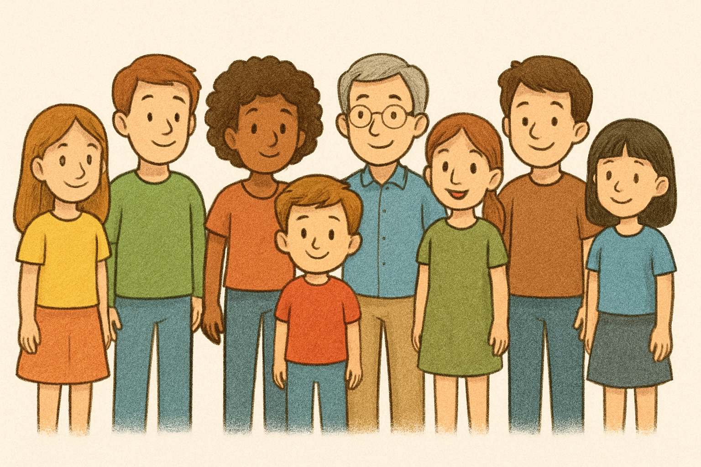

Nossa equipe

Pr. Carlos
Diretor Presidente
Adriane
Diretora
Camila Pinho Silva
Professora de reforço
Weslane
Professora de reforço
Waldir Chaves de Sousa Junior
Instrutor de Futebol
Wagner
Instrutor de Futebol
Carlos
Instrutor de Musica
Ester Hadassa
Instrutora de Musica
Jordeane Santos de Araujo
Instrutora de Musica
Karina
Instrutora de Musica
Otoniel Monteiro de Brito
Instrutor de Musica
Gercino
Instrutor de Tênis
Andréia Pinho Silva
Auxiliar Administrativo
Dulcinéia Comper Ribas
Auxiliar Administrativo
Ana Lucia Pereira da Silva
Merendeira